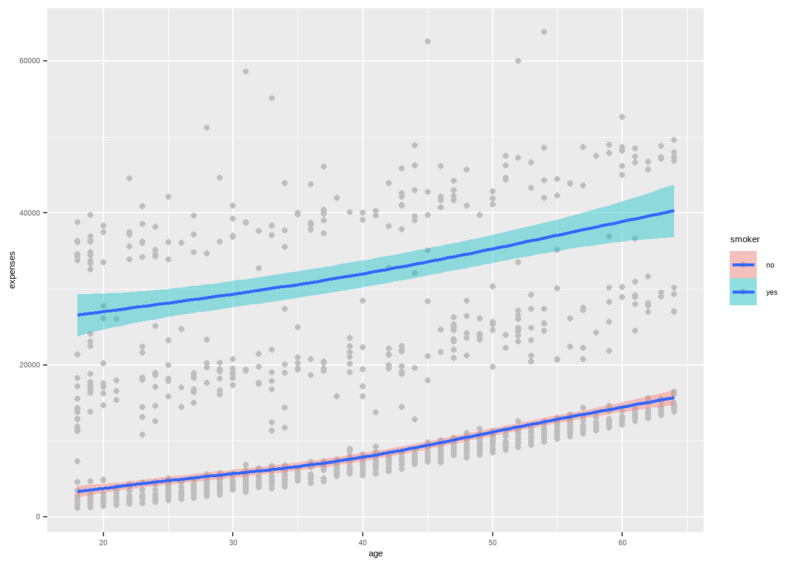
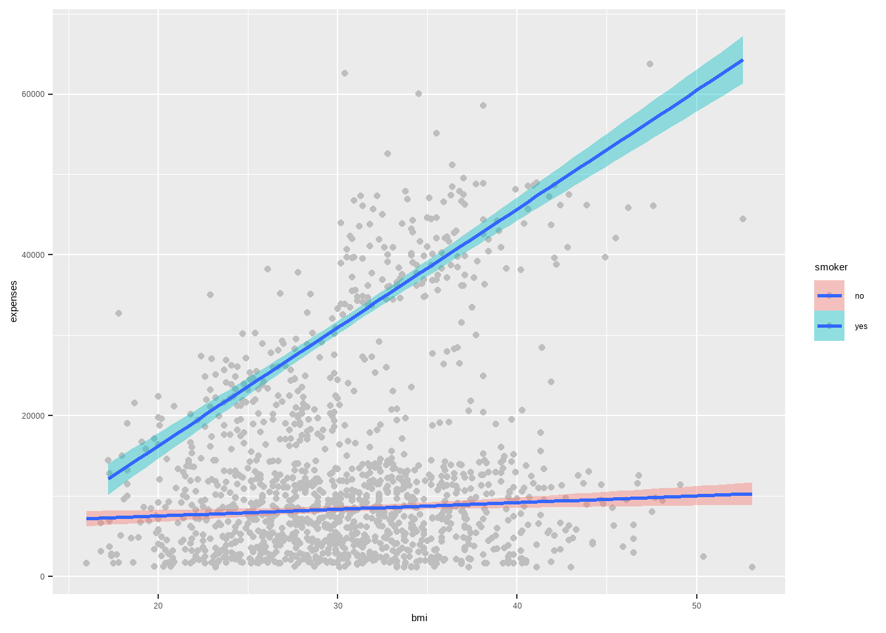
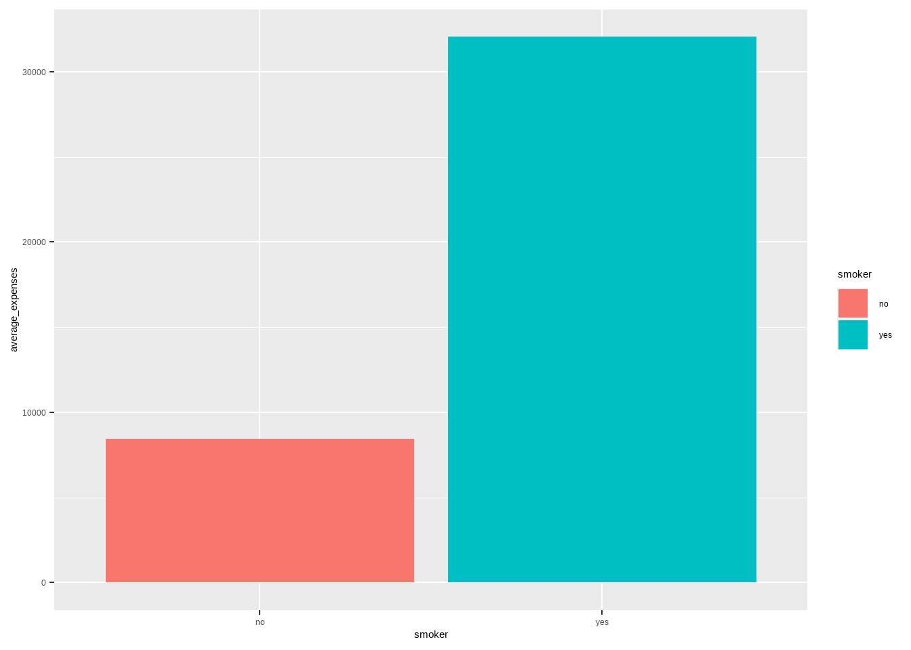
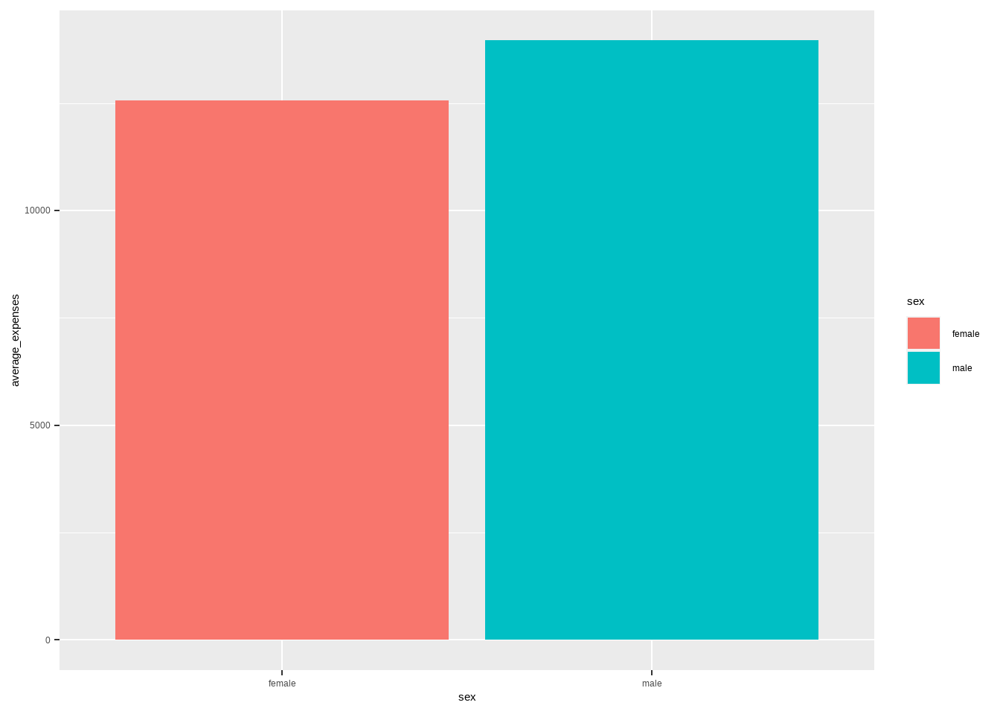

1 + 1[1] 2Quarto enables you to weave together content and executable code into a finished document. To learn more about Quarto see https://quarto.org.
When you click the Render button a document will be generated that includes both content and the output of embedded code. You can embed code like this:
You can add options to executable code like this
[1] 4The echo: false option disables the printing of code (only output is displayed).
The aim of this project is use the insurance dataset to come up with a model that can predict the amount an individual is supposed to pay as insurance expenses considering a number of factors such as age, BMI, sex, number of children, smoker status, and region.
Warning: package 'tidyverse' was built under R version 4.1.3-- Attaching packages --------------------------------------- tidyverse 1.3.1 --v ggplot2 3.3.5 v purrr 0.3.4
v tibble 3.1.5 v dplyr 1.0.7
v tidyr 1.1.4 v stringr 1.4.0
v readr 2.1.2 v forcats 0.5.1Warning: package 'readr' was built under R version 4.1.3-- Conflicts ------------------------------------------ tidyverse_conflicts() --
x dplyr::filter() masks stats::filter()
x dplyr::lag() masks stats::lag()Warning: package 'janitor' was built under R version 4.1.3
Attaching package: 'janitor'The following objects are masked from 'package:stats':
chisq.test, fisher.testWarning: package 'dlookr' was built under R version 4.1.3
Attaching package: 'dlookr'The following object is masked from 'package:tidyr':
extractThe following object is masked from 'package:base':
transformWarning: package 'performance' was built under R version 4.1.3# reading in the dataset
df <- read_csv("~/R projects/insurance expenses ML/Insurances-expenses-Prediction-in-R/Insurancedata.csv")Rows: 1338 Columns: 7
-- Column specification --------------------------------------------------------
Delimiter: ","
chr (3): sex, smoker, region
dbl (4): age, bmi, children, expenses
i Use `spec()` to retrieve the full column specification for this data.
i Specify the column types or set `show_col_types = FALSE` to quiet this message.# A tibble: 6 x 7
age sex bmi children smoker region expenses
<dbl> <chr> <dbl> <dbl> <chr> <chr> <dbl>
1 19 female 27.9 0 yes southwest 16885.
2 18 male 33.8 1 no southeast 1726.
3 28 male 33 3 no southeast 4449.
4 33 male 22.7 0 no northwest 21984.
5 32 male 28.9 0 no northwest 3867.
6 31 female 25.7 0 no southeast 3757.`geom_smooth()` using method = 'gam' and formula 'y ~ s(x, bs = "cs")'
`geom_smooth()` using formula 'y ~ x'
df %>% group_by(smoker) %>% summarise(average_expenses = mean(expenses)) %>%
ggplot(aes(smoker, average_expenses, fill=smoker))+
geom_bar(stat = 'identity')
df %>% group_by(sex) %>% summarise(average_expenses = mean(expenses)) %>%
ggplot(aes(sex, average_expenses, fill=sex))+
geom_bar(stat = 'identity')